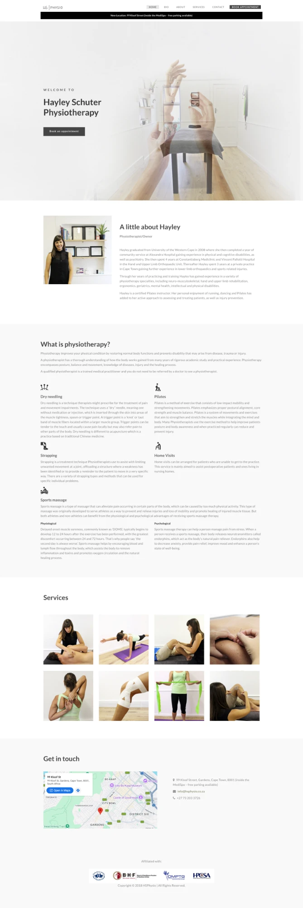

“Welcome to…” over a faded, hard-to-read image
Says straight away what you do and who you help, with Book and Call buttons
People decide in seconds whether to stay — they need to know you can help them immediately.
Same calm, minimal feel you like — but much clearer about what you do, why people should choose you, and how easy it is to book.

6 sections · no reviews · no hours or fees · contact form and phone only
New homepage
“Welcome to…” over a faded, hard-to-read image
Says straight away what you do and who you help, with Book and Call buttons
People decide in seconds whether to stay — they need to know you can help them immediately.
Services split between a long “What is physio” text and unlabelled photos
Clear special interests, common problems you treat, and labelled treatments
People search by their problem (“shoulder pain”), not treatment names — and it helps you show up on Google.
Mental health not mentioned
A dedicated Body & mind section
Reaches people with stress-related pain who wouldn’t think of physio — and sets you apart.
No reviews; credentials hidden at the bottom
Your 5-star Google reviews, years in practice and registrations near the top
Patients trust other patients’ words more than anything a practice says about itself.
No hours, fees, medical aid or cancellation info
All practical info in one place, plus a “Your first visit” guide
Answers questions before they’re asked — fewer calls and messages for you, less hesitation for patients.
Contact details only at the very bottom
Book online, WhatsApp, call and directions throughout the page
The easier it is to book — especially on a phone — the more people actually do.
Small grey text, older photos, 2018 copyright
Larger, clearer text, a calm green palette, new photos of you and the practice
Feels current and cared for — and is easier to read for every patient, including older ones.
Today
Treatment shots (no faces), the practice space and a portrait of you.
From you
Your bio, the Body & mind wording, and the conditions you most want to be booked for.
Then
Add the new photos, build the site, check it on phones, and go live.